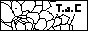
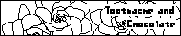

|
私のお気に入りとお世話になっているページ達です。
どれも素敵なサイトばかりです。
また、当サイトはリンクフリーなのですがっ！！
連絡下さればすっごく嬉しいです。なるべく連絡して下さいねん。
下のバナーを良ければお使い下さい。


リンク先は大体(笑)あいうえお順に並んでいます。
2003.5.21:てれび戦士応援サイト1件追加。up→

・天てれ関連サイト
[COOL DUDE]
ポカリさんの卓也応援サイトです。
卓也好きの私としては本当に見てて楽しいサイトさんです。
卓也が大好きな方は是非一度！と言わず二度も三度も遊びに行った方がいいですよ♪
イラストを描いてる方、ポカリさんの綺麗で素敵なイラストは必見です！勉強になります。
[Juwelry Thief]
翠蘭さんの熊ちゃん応援サイトです。
先日閉鎖されました。お疲れ様でした。楽しかったです。
[淡‐タツミ部屋‐]
タツミさんの少年系イラストサイトです。もちろん天てれページもございます。
ほんわかとても綺麗で可愛らしいイラストばかりで、どれを見てもうっとりです。
私はタツミさんの日記ページも大好きで密かに愛読させてもらってます♪
（これでばれちゃいましたね(笑)。）
[TTK Detective]
あっぱれさんが天てれ情報の適正化と、てれび戦士の権利を守る為に作られたサイトです。
近頃、てれび戦士になりすましての書き込みや誤報の書き込みが多いそうです。
もし、そういった書き込みや人を不快にさせるような書き込みがあったら、
このサイトさんに連絡してみてはどうでしょうか。
てれび戦士の事務所の方からのコメントもあります。
[Teddy Bear]
どんちさんが管理されています、熊ちゃんの応援サイトさんです。
以前は別の方が管理されていたのを引き継ぎ、新たにスタートさせたそうで、
これからの発展が楽しみですね〜！ほのぼのしたサイトの雰囲気が大好きです。
イラストメインだそうです♪そのうち描きに行かせてもらいにいきますね〜！
カウンターの単位が「くま」なのが実は気に入ってますｖｖ
[天てれ★City]
くみっぺさんの会員制天てれファンサイトです。
マイケルと元てれび戦士の隼太君のファンサイトでもあります。
二人のそれぞれのページ・コンテンツもあり、天てれコンテンツも豊富です！
会員制ってのがいいですよねぇ〜！なんか高級なイメージ…。
私も会員に入らせて頂きました。うしし♪
[天てれ商会 吉備巻堂]
もう、有名なサイトですよね。ここに来る皆さんは本当にいい方ばかりで
私もすごくお世話になっています。
サイト管理者kibimakiさんの「8cm日記」は本当に面白くて大ファンです。
イラスト担当・BBS管理者のBOXYさんのイラストも本当に素晴らしくて、お願いして借りてきちゃいました。
毎回新作が楽しみです。
[NANASE☆YUKIKO]
琳架さんの七世とゆっこ応援ページです。
雰囲気が女の子らしくてとってもかわいいページです。
私はここの「あなたをてれび戦士に例えると…」が大好きで通ってます。
[ボビー祭☆天てれside]
羊狸さん（or笠原ユイさん）の天てれサイトです。とにかくイラストが可愛いです！
小説コーナーや写真置き場もあります。
お絵描き掲示板によく遊びに行かせてもらってます。
[LOVE!LOVE!LOVE!]
ゆいさんの天てれサイトです。内容がかなり豊富です！
天てれサイト兼マンガ・イラストサイトで、マンガ関連のコンテンツもすごく面白いです。
行けばもれなくゆいさんの素敵なイラストを見ることができます♪
デザインもすごくおしゃれで目標にしたいサイトです。
・天てれリンク集
[天てれリンク2002]
ichiroさんの天てれリンク集です。
ここに載っていないサイトはないのでは？ってくらい充実してます。